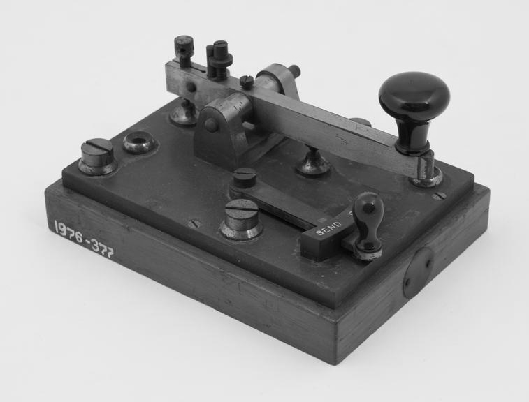

Archive of Encoded Information
05 Systems

002
Morse Code
Language Through Time
1830s–1840s / United States / Samuel Morse & Alfred Vail
A communication system that transforms letters into sequences of short and long signals, allowing information to travel across distances.
Developed alongside the electrical telegraph in the 1830s and 1840s, Morse code enabled messages to be transmitted through electrical signals. In 1844, Morse demonstrated long-distance telegraph communication between Washington, D.C., and Baltimore.
Dots, Dashes, and Duration
Each character is represented by a sequence of dots (short signals) and dashes (long signals). The timing and pauses between signals determine how a message is interpreted.
MORSE OUTPUT
Explore Related Systems